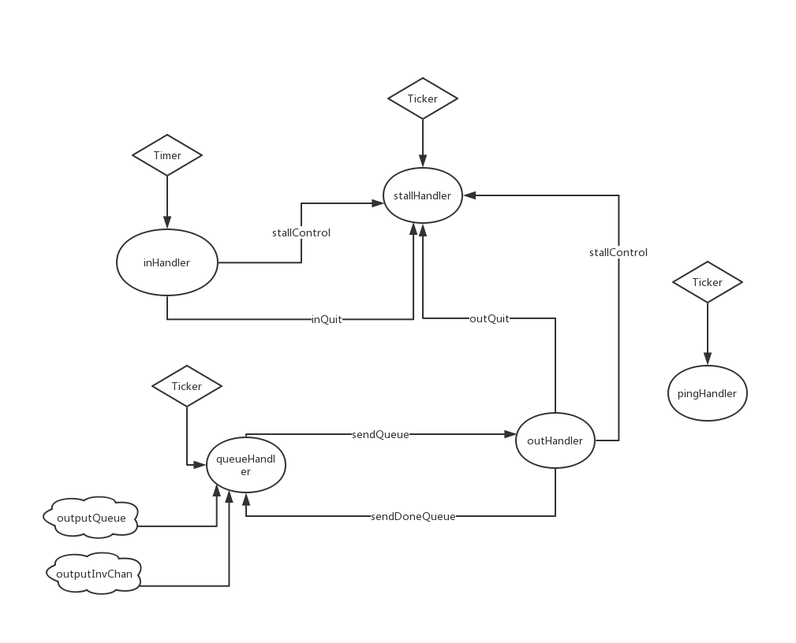

BTCD源码阅读笔记-peer
btcd 是一个golang实现的比特币全节点。
本文是阅读其peer包代码的笔记（有些潦草），分析其主要结构。
基于git代码版本: 16327141da8ce4b46b5bac57ba01352943465d9e
Table of Contents
1 peer模块
下面介绍摘选自包的doc文件
Package peer provides a common base for creating and managing Bitcoin network peers.
This package builds upon the wire package, which provides the fundamental primitives necessary to speak the bitcoin wire protocol, in order to simplify the process of creating fully functional peers. In essence, it provides a common base for creating concurrent safe fully validating nodes, Simplified Payment Verification (SPV) nodes, proxies, etc.
peer模块主要逻辑在peer.go里。 通过阅读example_test.go可以看到peer.go的大致用法。
1.1 结构/文件
主要结构是peer.go里定义的Peer结构. 其它的struct Config, 其定义Peer的配置 config 有一个field: MessageListeners, 定义Peer不同的handler 另外在mruinvmap.go里： 定义了一个有最大数量限制的map,当达到限制时，移除最旧的entry 同样的，在mrunoncemap.go里 逻辑上与上面类似，只不过封装的类型不同
1.2 方法
核心方法在peer.start()里，定义了一个peer启动时应当做哪些事情，
1.2.1 start方法
1. 先沟通版本[negotiateInboundProtocol/negotiateOutboundProtocol] 2. 然后以goroutine启动多个handler[stallHandler, inHandler, queueHandler, outHandler, pingHandler] 主要handle逻辑就在这些handler里面
沟通版本的核心方法是readRemoteVersionMsg/writeLocalVersionMsg
1.2.2 readRemoteVersionMsg
readRemoteVersionMsg方法读取连接中的MsgVersion信息， 将版本设置为remote提议的版本和自身设置的版本中小的那一个。 之后更具msg的信息更新本身peer的一些信息，比如lastBlock, startingHeight等 然后判断remote支不支持witness，如果支持，设置本身的wireEncoding 之后如果本身有设置了OnVersion Handler，那么调用它 最好检查协商下来的版本是不是高于预设的一个最小可接受版本（MultipleAddressVersion uint32 = 209）
1.2.3 writeLocalVersionMsg
writeLocalVersionMsg先调用localVersionMsg生成一个本地version msg 然后立即发送出去
1.2.4 stallHandler
该handler处理请求(延时)情况.
定义了一个15s的stallTicker
通过for/select来处理以下情况:
1. 有stall相关动作发送时(msg<-p.stallControl)
根据msg的种类分别处理:
1.表示有消息刚发送
处理方式: 添加等待response的超时计数
2.表示有消息刚接收
处理方式: 删去相应的等待response的超时计数
3.表示一个callback handler刚准备处理
处理方式: 添加一个开始计时器
4.表示一个callback handler处理完成
处理方式：更新下整个handler运行的时间，作为offset
2. 15s时间到时(<-stallTicker.C)
检查等待返回的response，算上上面offset, 如果现在的时间超过了预设的等待response的时间+offset
那么认定连接超时关闭连接
3. inbound停止发生时(<-inQuit)
将一个ioStopped标签设为false
4. outbound停止发生时(<-outQuit)
将一个ioStopped标签设为false
最后做一些清理工作。
1.2.5 inHandler
该handler处理所有incoming messages.
设置一个5min的idleTimer，如果到时间则断开相应连接.
在连接断开前重复执行:
先读取msg
发送“有消息刚接收”的事件(由stallHandler处理)
发送“handler刚准备处理”的事件(由stallHandler处理)
根据消息msg的类型，调用相应的handler处理，如果配置里还配有一些Onxxx的处理函数，继续调用处理
处理完，发送"handler处理完成"的事件(由stallHandler处理)
如果连接断开(根据标识判断)，那么关闭timer,确保连接断开，关闭inQuit.
1.2.6 queueHandler
该handler处理所有实际上是和outhandler协同工作，将要发送的消息放到queue里，由outHandler来作发送处理。 根据配置定义一个trickleTicker,用来控制多久发送一次inventory给其他peer 通过for/select来处理以下情况: 1. 当有要发送的消息是(msg<-p.outputQueue) 根据是否等待，选择将msg发送给sendQueue（供outHandler真实发送）还是放到一个list（pendingMsgs）里 2. 当outhandler发完一个消息时(<-p.sendDoneQueue) 从list（pendingMsgs）里去一个消息，发送到sendQueue（供outHandler真实发送） 3. 当有Inventory的输出请求时（<-p.outputInvChan） 如果是一个输出block的请求, 立即发送。 其他情况放到一个list里(invSendQueue) 4. 当trickleTicker发生时 将存在list(invSendQueue)里的Inventory拿出来，统一包装成一个msg发送。 5. 当有p.quit退出请求时 break 做一些清理工作: 1.检查临时消息暂存list(pendingMsg)是否还有为处理完的消息。 2.检查发送消息的队列(outputQueue)是否还有未处理完的消息 3.检查是否还有inventory的输出请求（<-p.outputInvChan） 4.关闭queueQuit
1.2.7 outHandler
该handler处理所有outgoing messages.
采用for/select来处理以下情况:
1. sendQueue有消息
发送“有消息刚发送”的事件(由stallHandler处理)
向连接写入消息内容
更新一些统计信息(lastSend)
发送“本消息发送完成”的事件(由queueHandler处理)
2. peer退出
break
等待queueQuit关闭
最后做一些清理工作（取完sendQueue,关闭outQuit等）
1.2.8 pingHandler
该handler每个2min发送一个ping请求直到quit，以此来更新peer活跃信息
1.2.9 消息传递简图

1.2.10 其它一些方法
- PushAddrMsg, 向peer发送addr消息来告知自己连接的节点地址
- PushGetBlocksMsg, 向peer发送getblocks消息，来获取区块消息
- PushGetHeadersMsg, 向peer发送getheaders消息，来获取区块头部消息
- PushRejectMsg, 向peer发送reject消息，来reject收到的消息